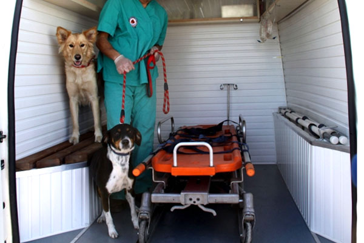

Ambulance for Animals in Van
Ambulance for Animals in Van Yüzüncü Yıl University (YYÜ) Veterinary Faculty purchased a full-fledged animal ambulance for approximately 200 thousand liras.
When an ambulance, injured and sick animal is reported, the animal will go to the region where the animal is accompanied by veterinarians and will transfer the animal to the university's animal hospital after the first intervention. The ambulance, which will run for the help of pets and street animals as well as animals that are sick or injured in nature, was delivered at a ceremony held at YYÜ Faculty of Veterinary Medicine.
